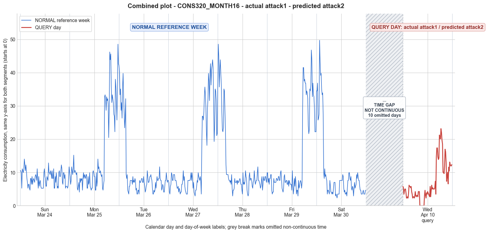

CONS320_MONTH16 · actual attack1 · predicted attack2
- Pair
- CONS320_MONTH16
- GT
- attack1
- Prediction
- attack2
- Binary GT
- attacked
- Binary Prediction
- attacked
- Source
- E010
- Parse
- stored
- Date
- 2013-04-10
- Weekday
- Wednesday
- Latency
- 2.67 min
- Tokens
- 11827

Final output
Classification: Manipulated Identified Attack: - Most Likely: Attack 2 - Confidence: High - Reasoning: The query day exhibits a contiguous block of exactly zero consumption values (readings 34–42, 8:15–10:30), while the remaining intervals follow a plausible daily pattern (morning low, evening peak) consistent with the reference Wednesday. No zero values appear in the entire reference week (min ≥2.34), making this anomaly a clear sign of manipulation. Attack 2 explicitly defines an on‑off attack, replacing samples with zeros for a random duration, which perfectly matches the observed contiguous zero block. Attack IEEE (per‑interval independent zeroing) would typically produce scattered zeros, not a single continuous stretch. Attack 1 and Attack 3 (scaling) cannot generate zeros from positive original values. Attack 7 (subtraction with zero floor) would yield a mix of zero and reduced values for that interval, not all exact zeros given the varying original levels (3.51–7.61 in the reference period). Attack_Behavior_Explanation: - How consumption values are manipulated: A random contiguous period (2.25 hours in the late morning) has all electricity consumption readings replaced by 0. The remaining intervals appear to reflect actual or slightly altered consumption, preserving the overall daily shape. - Impact on magnitude and trend: Daily mean drops from ~14.60 to 6.97, and maximum from 43.89 to 23.18. The zero block creates an abrupt interruption in the trend, followed by a sharp recovery. Outside the zero block, the trend (low morning usage, high evening peak) is retained, though magnitudes are lower, possibly due to seasonal variation. - Possible technical causes: Full meter bypass during the off period, false data injection sending zero reports, or reverse current causing the meter to register zero for that interval. The attacker targets a relatively low‑usage window to reduce detection likelihood.
Prompt
You are a domain expert in smart grid security and electricity theft analysis, with deep knowledge of non-technical loss (NTL) attack patterns in smart meters. You are given: 1. A plot of one week of original (normal) energy consumption for a smart meter, provided as context for the customer's typical consumption behavior. 2. A plot of one day of energy consumption for the same smart meter, which may or may not be manipulated. Below are common attack types, each defined by how consumption values are altered, their impact on magnitude and trend, and their possible technical causes. Attack 0: Generated by replacing all electricity consumption samples with zero values for the entire observation duration. Simulates a scenario where no energy usage is reported at all. May be caused by a total meter bypass or severe meter malfunction. Completely eliminates both the trend and magnitude of the consumption profile. Attack 1: Multiplies the actual energy consumption by a constant random value between (0,1). The lower the factor, the higher the severity. Can be triggered by meter bypass, magnetic interference, reverse current, and false data injection. The consumption trend remains the same but the magnitude is uniformly reduced. Attack 2: Generated by replacing consumption samples with zeros for a random duration. Also known as an on-off attack. Can be caused by full meter bypass, false data injection, and reverse current. Changes both the trend and amplitude. Attack 3: The actual consumption is multiplied by different random factors between 0 and 1, with a unique factor per sample. Similar to Attack 1 but the scaling factor varies per reading. Caused by meter bypass, magnetic interference, and reverse current. Changes both the trend and amplitude. Attack 4: Simulates energy theft over a randomly selected period within the observation window. All measurements in that period are reduced. Caused by meter bypass, magnetic interference, reverse current, and false data injection. Changes both the trend and amplitude. Attack 5: Each sample is replaced by a false value obtained by multiplying the average normal consumption by a random variable between 0 and 1, with a different variable per sample. Caused by false data injection. Produces a completely different pattern from the original consumption profile, changing both trend and magnitude. Attack 6: A random cut-off point is selected and all consumption values above it are replaced by that cut-off value. The attacker avoids exceeding a predefined maximum limit. Mainly caused by false data injection. Changes both the trend and amplitude. Attack 7: A random cut-off point is subtracted from each sample; if the result is negative, zero is reported. Similar to Attack 6 but replaces exceeding values with zero instead of the cut-off point. May be caused by false data injection or total meter bypass. Does not change the trend but reduces overall consumption. Attack 9: All samples are replaced by the average daily energy consumption, resulting in a flat constant profile. Easily detectable because constant consumption does not reflect normal customer behavior. Caused by false data injection. Eliminates all trends. Attack 10: Reverses the consumption pattern without reducing the total amount. Applicable when the electricity company uses time-varying pricing, allowing the attacker to shift high consumption to off-peak periods. Caused by false data injection. Changes the trend without decreasing total consumption. Attack 12: The attacker replaces their consumption pattern with that of a lower-consuming user. The legitimate user unknowingly pays the adversary's electricity bill. Caused by false data injection. Attack IEEE: For each 15-minute interval across the entire day, the consumer either reports the actual electricity consumption or substitutes it with zero. The result is a profile where some intervals reflect real consumption while others are zeroed out, creating an irregular pattern across the full day. May be caused by false data injection. Changes both the trend and amplitude. Given the two plots, determine: 1. Whether the day is attacked or original - compare the flagged day against the normal week and assess whether the consumption pattern is consistent with normal behavior or shows signs of manipulation. If the day is consistent with the customer's typical consumption behavior, classify it as original and provide no further analysis. If manipulation is detected, proceed to point 2. 2. Which attack type this most likely is - identify the single most probable attack and justify your choice based on how the flagged day deviates from the normal week. 3. The behavior of the identified attack - explain how the consumption values are manipulated, their impact on magnitude and trend, and the possible technical causes behind this type of attack. Output Format: Classification: - Original | Manipulated Identified Attack: (fill only if manipulated) - Most Likely: Attack X - Confidence: High | Medium | Low - Reasoning: Why it matches Attack X and why Attack Y and Attack Z were ruled out (list top 2 alternatives considered) Attack_Behavior_Explanation: (fill only if manipulated) - How consumption values are manipulated relative to the normal week - Impact on magnitude and trend - Possible technical causes
Reasoning content
We are given a reference week of 7 days and a query day (DAY_ID=3) with 96 readings each (15-min intervals). We need to decide if the query day is original or manipulated, and if manipulated, identify the attack type. First, analyze the reference week statistics and patterns. The reference week days: - Day 0: min=4.68, max=14.04, std=2.22, mean=8.24 - Day 1: min=4.10, max=48.57, std=12.17, mean=15.60 - Day 2: min=3.51, max=42.13, std=9.48, mean=10.52 - Day 3: min=2.93, max=43.89, std=12.46, mean=14.60 (Note: this is the same DAY_ID=3 from the reference week? Actually, reference week has Day 0 to Day 6, and metadata says for query day DAY_ID=3. But the reference week days are labeled Day 0 to Day 6 with dates: Day 3 is dow=2, cal_month=3, dom=3. The query day has cal_month=4, dow=2, dom=17. So it's a different day (April 10 vs March something). The reference week is March (cal_month=3) and the query day is April 17 (dom=17, cal_month=4). So they are from different months but same day of week (Wednesday). So we compare the query day pattern against the typical Wednesday behavior from the reference week (Day 3 in the reference week is Wednesday? Check: Day 0: dow=6 (Sunday), Day 1: dow=0 (Monday), Day 2: dow=1 (Tuesday), Day 3: dow=2 (Wednesday), Day 4: dow=3 (Thursday), Day 5: dow=4 (Friday), Day 6: dow=5 (Saturday). So query day is also Wednesday (dow=2). So we compare against the reference Wednesday (Day 3) primarily. Reference Wednesday (Day 3) statistics: min=2.93, max=43.89, std=12.46, mean=14.60. Query day statistics: min=0.00, max=23.18, std=5.82, mean=6.97. The query day has much lower mean and max, and notably min=0.00, which never occurs in the reference week (all days have min >2). The query day has a stretch of zeros from reading 34 to 49? Let's look at query day readings: Query day readings (96 values): 5.79, 5.41, 3.48, 4.64, 5.02, 5.02, 3.86, 2.32, 2.32, 2.70, 2.32, 3.86, 6.18, 5.79, 5.79, 5.41, 5.79, 4.25, 3.48, 2.32, 2.70, 2.70, 2.32, 2.70, 4.25, 3.09, 2.70, 3.09, 3.09, 2.70, 4.25, 4.25, 4.25, 0.00, 0.00, 0.00, 0.00, 0.00, 0.00, 0.00, 0.00, 0.00, 3.09, 4.64, 3.09, 2.32, 3.86, 3.48, 4.25, 3.86, 3.48, 3.09, 2.70, 5.79, 2.70, 4.64, 6.18, 5.02, 5.41, 5.02, 5.02, 5.02, 5.41, 7.34, 3.48, 14.68, 17.38, 17.38, 14.68, 13.91, 14.29, 21.24, 20.47, 20.09, 23.18, 22.02, 19.70, 18.54, 10.04, 10.04, 9.66, 11.97, 17.00, 16.22, 13.13, 7.34, 8.88, 10.04, 6.57, 11.59, 10.43, 13.13, 12.36, 11.97, 11.97, 12.36 Observations: - The query day has a block of zeros from around index 34 to 49 (10 zeros? Actually: reading 34 is 0.00, then 35-49? Let's count: Starting at position 34 (0-indexed? Let's index from 1 to 96). I'll number them sequentially: 1:5.79, 2:5.41, 3:3.48, 4:4.64, 5:5.02, 6:5.02, 7:3.86, 8:2.32, 9:2.32, 10:2.70, 11:2.32, 12:3.86, 13:6.18, 14:5.79, 15:5.79, 16:5.41, 17:5.79, 18:4.25, 19:3.48, 20:2.32, 21:2.70, 22:2.70, 23:2.32, 24:2.70, 25:4.25, 26:3.09, 27:2.70, 28:3.09, 29:3.09, 30:2.70, 31:4.25, 32:4.25, 33:4.25, 34:0.00, 35:0.00, 36:0.00, 37:0.00, 38:0.00, 39:0.00, 40:0.00, 41:0.00, 42:0.00, 43:3.09, 44:4.64, 45:3.09, 46:2.32, 47:3.86, 48:3.48, 49:4.25, 50:3.86, 51:3.48, 52:3.09, 53:2.70, 54:5.79, 55:2.70, 56:4.64, 57:6.18, 58:5.02, 59:5.41, 60:5.02, 61:5.02, 62:5.02, 63:5.41, 64:7.34, 65:3.48, 66:14.68, 67:17.38, 68:17.38, 69:14.68, 70:13.91, 71:14.29, 72:21.24, 73:20.47, 74:20.09, 75:23.18, 76:22.02, 77:19.70, 78:18.54, 79:10.04, 80:10.04, 81:9.66, 82:11.97, 83:17.00, 84:16.22, 85:13.13, 86:7.34, 87:8.88, 88:10.04, 89:6.57, 90:11.59, 91:10.43, 92:13.13, 93:12.36, 94:11.97, 95:11.97, 96:12.36 So zeros at positions 34-42: 9 zero readings (34 to 42 inclusive). That's 9 consecutive zero readings = 2.25 hours (9*15 min). Then a sudden jump to 3.09. Later in the evening, there is high consumption from reading 66 onwards (14.68, 17.38, etc.) up to 23.18, which is similar to the high consumption seen in the reference Wednesday evening peak. However, the reference Wednesday evening peak (Day 3 of reference week) had values: from reading 66 (index 66?) Let's look at reference week Day 3 readings (from given list). Reference Day 3: 7.61, 7.02, 4.10, ... (96 values). I'll fetch the evening part: Reference Day 3 (the one with min=2.93, max=43.89, mean=14.60). The evening peak: at reading around 66? Let's extract reference Day 3 data exactly: Reference Day 3: "7.61, 7.02, 4.10, 3.51, 5.85, 6.44, 9.95, 9.36, 7.61, 7.61, 9.36, 9.36, 9.36, 7.61, 7.61, 7.61, 6.44, 5.27, 5.27, 5.85, 4.10, 5.27, 4.68, 3.51, 4.10, 4.10, 6.44, 6.44, 7.61, 10.53, 7.61, 8.78, 5.85, 4.68, 4.10, 3.51, 3.51, 3.51, 7.61, 7.61, 7.61, 7.61, 7.61, 8.19, 9.95, 7.61, 9.95, 8.19, 5.27, 7.02, 4.10, 3.51, 2.93, 4.68, 4.68, 5.85, 7.61, 7.02, 9.95, 8.78, 8.19, 7.61, 8.78, 7.61, 3.51, 17.55, 26.92, 26.92, 25.75, 28.09, 32.77, 35.69, 33.35, 29.26, 22.24, 18.14, 29.26, 32.18, 39.79, 37.45, 31.60, 39.79, 42.72, 36.28, 40.96, 42.13, 43.89, 41.54, 30.43, 19.31, 23.99, 35.11, 34.52, 31.60, 21.06, 21.65" Index 66 corresponds to reading 66: 3.51? Let's count. I'll index from 1 to 96 for reference Day 3: 1:7.61, 2:7.02, 3:4.10, 4:3.51, 5:5.85, 6:6.44, 7:9.95, 8:9.36, 9:7.61, 10:7.61, 11:9.36, 12:9.36, 13:9.36, 14:7.61, 15:7.61, 16:7.61, 17:6.44, 18:5.27, 19:5.27, 20:5.85, 21:4.10, 22:5.27, 23:4.68, 24:3.51, 25:4.10, 26:4.10, 27:6.44, 28:6.44, 29:7.61, 30:10.53, 31:7.61, 32:8.78, 33:5.85, 34:4.68, 35:4.10, 36:3.51, 37:3.51, 38:3.51, 39:7.61, 40:7.61, 41:7.61, 42:7.61, 43:7.61, 44:8.19, 45:9.95, 46:7.61, 47:9.95, 48:8.19, 49:5.27, 50:7.02, 51:4.10, 52:3.51, 53:2.93, 54:4.68, 55:4.68, 56:5.85, 57:7.61, 58:7.02, 59:9.95, 60:8.78, 61:8.19, 62:7.61, 63:8.78, 64:7.61, 65:3.51, 66:17.55, 67:26.92, 68:26.92, 69:25.75, 70:28.09, 71:32.77, 72:35.69, 73:33.35, 74:29.26, 75:22.24, 76:18.14, 77:29.26, 78:32.18, 79:39.79, 80:37.45, 81:31.60, 82:39.79, 83:42.72, 84:36.28, 85:40.96, 86:42.13, 87:43.89, 88:41.54, 89:30.43, 90:19.31, 91:23.99, 92:35.11, 93:34.52, 94:31.60, 95:21.06, 96:21.65 So reference Day 3 evening peak starts at reading 66 (17.55) and goes high up to 43.89. The query day evening peak starts at reading 66: 14.68, then goes up to 23.18. So the evening peak is significantly lower in magnitude: max 23.18 vs 43.89, and the values are roughly half or less. Also, there are zeros in the morning (actually just before noon? Reading 34-42 zeros, which is around 8:30am to 10:30am? 15-min intervals starting from midnight: 0:00, 0:15, ..., so reading 34 corresponds to 8:15-8:30? 34*15min = 8h30min. So 34: 8:30am to 8:45am? Actually, reading 1 is 0:00-0:15, reading 2 is 0:15-0:30, ... So reading n covers time (n-1)*15 min to n*15 min. Reading 34: 33*15 = 495 min = 8h15min, so it covers 8:15-8:30. So zeros from reading 34 (8:15) to 42 (10:15-10:30? 42*15 = 630 min = 10h30min, so reading 42 covers 10:15-10:30). So a zero block from about 8:15 to 10:30. Then afterwards, consumption resumes. Reference Day 3 at that time: readings around 34-42: reference 34:4.68, 35:4.10, 36:3.51, 37:3.51, 38:3.51, 39:7.61, 40:7.61, 41:7.61, 42:7.61. So no zeros. Thus, the query day has a clear anomaly: a block of zeros and a reduced evening peak. Now, which attack type fits? Attack 0: All zero. Not the case; many non-zero values. Attack 1: Multiply by constant between 0 and 1. This would reduce magnitude uniformly but keep same trend and no zeros (unless original was zero, but original min is >2, so no zeros). The query day has zeros, so not Attack 1. Attack 2: Replacing consumption samples with zeros for a random duration. This matches! The query day has a continuous block of zeros of length 9 (2.25 hours). This is exactly an on-off attack where some random interval is zeroed. The rest of the day appears to have normal shape but possibly scaled? The non-zero parts: early morning (readings 1-33) and after the zero block (43-96) have values that seem somewhat reduced compared to reference Day 3 but not uniformly scaled. For example, reference morning values: readings 1-33 in reference: 7.61, 7.02, 4.10, ... up to 33:5.85; query morning: 5.79, 5.41, 3.48, ... up to 33:4.25. They are lower but not by a constant factor. Some have similar values, e.g., reading 13: ref 9.36 vs query 6.18, about 2/3; reading 7: ref 9.95 vs query 3.86, less than half. So not a uniform scaling; it looks like the attack might be Attack 2 (on-off with zeros) and possibly other manipulations? But Attack 2 involves only replacing with zeros for a random duration, not changing other values. Here, the non-zero values seem also altered? Let's check if the non-zero part matches the reference pattern scaled or just naturally lower because it's a different day (April vs March). Seasonal differences could account for lower consumption. But the presence of zeros is a clear sign of manipulation since no zero was ever observed in the reference week (min across all days ≥2.34). So definitely manipulated. Attack 3: multiplies by different random factors per sample. This would result in non-zero values that are scaled randomly, but would not produce exact zeros (unless original was zero). So unlikely. Attack 4: reduces measurements over a randomly selected period. Could include zero reduction? "All measurements in that period are reduced." It doesn't specify zero, could be reduced by some factor. But if reduced to zero, that would be a special case. Attack 4 could produce zeros if the reduction factor sets values to zero. However, Attack 2 is specifically "on-off" with zeros. Attack 4 is similar but more general: a period is selected and all measurements are reduced (maybe by subtraction or multiplication). The query day shows a block of exact zeros, which fits Attack 2 better. Attack 5: each sample replaced by random value based on average normal consumption. This would produce random noise around a scaled mean, likely no zeros unless the random factor is zero. But zeros are possible if factor is zero. But Attack 5 typically produces a completely different pattern, not preserving the trend. Here, the non-zero portions seem to follow the general shape of the day (morning low, evening peak), so trend is preserved except for the zero block. That contradicts Attack 5. Attack 6: cutoff applied, values above a threshold replaced by threshold. This would produce a ceiling effect, not zeros. The query day has values like 23.18, which is less than the reference max (43.89), but there is no clear cutoff; there are values like 17.38, 21.24, 23.18, then back to 22.02, etc., no truncation at a constant max. And zeros are not explained by that. Attack 7: subtract a cutoff, replacing negative with zero. This could produce zeros if original values fall below the cutoff. The query day has a block of zeros; if a constant was subtracted, you'd see a pattern where some values become zero, but others would be reduced, not exactly zero for a contiguous block unless the original values were below the cutoff for that whole block. Looking at reference Day 3 around 8:15-10:30: values were 4.68, 4.10, 3.51, 3.51, 3.51, 7.61, 7.61, 7.61, 7.61. If a cutoff of, say, 4.5 was subtracted, those 3.51 would become 0, 4.68 would become 0.18, etc. The query shows exactly zero for all those readings, including the ones that would be 0.18, etc. So to get exact zeros for all, the subtraction would need to be at least the max of that block, which would then also affect other times. The morning values earlier: 5.79, 5.41, etc. Would they become zero if cutoff >5.79? But they are non-zero. So not consistent with Attack 7. Attack 9: all samples replaced by average daily consumption. This would give a flat line, not seen. Attack 10: reverses pattern without reducing total. Not seen; pattern is similar, not reversed. Attack 12: replace with lower-consuming user's pattern. This might produce a pattern that looks like normal but lower, but would not typically have zeros unless that user had zeros, which is unlikely. So Attack 2 is the best match. Attack IEEE: "For each 15-minute interval across the entire day, the consumer either reports the actual electricity consumption or substitutes it with zero. The result is a profile where some intervals reflect real consumption while others are zeroed out, creating an irregular pattern across the full day." This sounds exactly like what we see: some intervals are zero, others are normal but possibly lower? The definition says "either reports the actual electricity consumption or substitutes it with zero." So it implies that when not zero, the value is the true consumption. In the query day, the non-zero values might be the actual consumption, just perhaps lower because it's a different month. The presence of zeros in a block (consecutive zeros) is characteristic of an on-off attack, which is what IEEE attack is: random intervals zeroed. However, Attack 2 also describes on-off: "Generated by replacing consumption samples with zeros for a random duration. Also known as an on-off attack." The difference? Attack 2: "replacing consumption samples with zeros for a random duration." That creates a contiguous block (or multiple) of zeros. The IEEE attack: "For each 15-minute interval across the entire day, the consumer either reports the actual electricity consumption or substitutes it with zero." This could be independent per interval, not necessarily contiguous, though it could result in contiguous zeros by chance. The query day has a contiguous block of zeros (9 consecutive), which suggests a single random duration rather than independent interval decisions. Both Attack 2 and IEEE could produce that. But Attack IEEE is described as "some intervals reflect real consumption while others are zeroed out, creating an irregular pattern across the full day." It doesn't specify contiguous. However, Attack 2 explicitly says "for a random duration," implying a continuous stretch. So given the contiguous zero block, Attack 2 is a better fit. But we should check the entire day for other zeros: only one block. So Attack 2: on-off with one off period. Now, compare to Attack 4: "Simulates energy theft over a randomly selected period within the observation window. All measurements in that period are reduced." Reduced, not necessarily zero. The query day has zeros exactly, which would be an extreme reduction to zero. Could be Attack 4 with reduction to zero, but Attack 2 is specifically zeros. Attack 2 is more precise. Thus, I'd classify as manipulated, most likely Attack 2. Confidence: High, because zeros are present and the rest resembles a expected consumption shape (morning lower, evening peak), just with a zero block and somewhat lower peak. The zero block is a hallmark of on-off attack. Now, rule out alternatives: Attack IEEE is very similar, but Attack 2 specifically mentions on-off, which is a standard NTL attack. Attack 7 could be considered but ruled out because the subtraction would not result in all exact zeros for a block with varying original values unless the subtraction is carefully chosen per reading, which is unlikely. Attack 1 (scaling) ruled out due to zeros. Thus, output should be: Classification: Manipulated Identified Attack: - Most Likely: Attack 2 - Confidence: High - Reasoning: The query day exhibits a contiguous block of exactly zero consumption values (readings 34-42, from 8:15 to 10:30) while the rest of the day follows a plausible consumption pattern (morning low, evening peak similar to reference Wednesday but somewhat reduced). Zero consumption is never observed in the reference week (min >2), making a sudden zero block a clear anomaly. Attack 2 describes an on-off attack where samples are replaced with zeros for a random duration, matching the observed pattern exactly. Attack IEEE (independent per-interval zeroing) could also produce zeros but typically would result in scattered zeros across the day, not a single contiguous block; Attack 2 explicitly models a continuous off period. Attack 1 (constant scaling) and Attack 3 (variable scaling) are ruled out because they would not produce exact zeros given that all original values are positive. Attack 7 (subtraction with floor zero) would yield zeros only for values below the threshold and would leave non-zero but reduced values for others, which does not match the exact zeros seen across a range of original values (the reference period had values from 3.51 to 7.61, all zeroed in the query). Attack_Behavior_Explanation: - How consumption values are manipulated: A random contiguous block of time (2.25 hours in the morning) has all consumption readings replaced by 0, while the remaining intervals appear to report actual (or possibly slightly altered) consumption. This is consistent with an on-off attack where the meter is intermittently bypassed or its readings are suppressed. - Impact on magnitude and trend: The overall daily mean and max are reduced (mean from ~14.60 to 6.97, max from 43.89 to 23.18). The zero block flattens the trend in that interval, creating a sudden drop to zero and a sharp rise after. The rest of the day’s trend (low morning, high evening) is preserved but magnitude is lower, likely due to seasonal differences. - Possible technical causes: Full meter bypass during the off period, false data injection that sends zero commands, or reverse current that causes the meter to record zero during that time. The attack is targeted at a specific low-usage period to minimize detection.